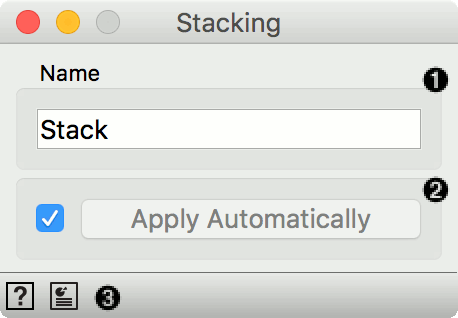
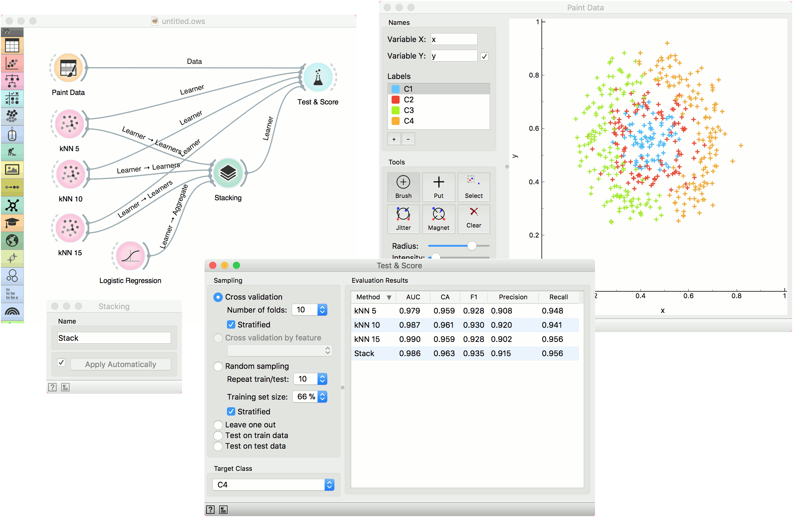

Stacking
Stack multiple models.
Inputs
- Data: input dataset
- Preprocessor: preprocessing method(s)
- Learners: learning algorithm
- Aggregate: model aggregation method
Outputs
- Learner: aggregated (stacked) learning algorithm
- Model: trained model
Stacking is an ensemble method that computes a meta model from several base models. The Stacking widget has the Aggregate input, which provides a method for aggregating the input models. If no aggregation input is given the default methods are used. Those are Logistic Regression for classification and Ridge Regression for regression problems.

- The meta learner can be given a name under which it will appear in other widgets. The default name is “Stack”.
- Click Apply to commit the aggregated model. That will put the new learner in the output and, if the training examples are given, construct a new model and output it as well. To communicate changes automatically tick Apply Automatically.
- Access help and produce a report.
Example
We will use Paint Data to demonstrate how the widget is used. We painted a complex dataset with 4 class labels and sent it to Test & Score. We also provided three kNN learners, each with a different parameters (number of neighbors is 5, 10 or 15). Evaluation results are good, but can we do better?
Let’s use Stacking. Stacking requires several learners on the input and an aggregation method. In our case, this is Logistic Regression. A constructed meta learner is then sent to Test & Score. Results have improved, even if only marginally. Stacking normally works well on complex data sets.
